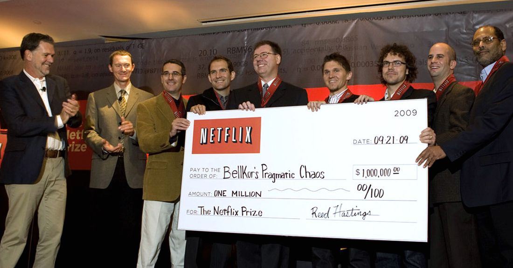

The Algorithm System üì±

Netflix
A Mass Media Machine
1997 - Founded as a blockbuster DVD renting service.
2007 - Started streaming movies online.
2012 - Started making original content.
2021 - 206 million subscribers in 190 countries.
2023 - Produced over 1,900 original shows, many of which are world-wide hits.
Amassing hundreds of millions of viewers over nearly 2
decades of operations, through its reach potential and established resources,
Netflix's impact on mass culture is undeniable.
Changing Pop Culture
Cable Television ➡️ Online Streaming
Binge-watching Habbits üõãÔ∏è
Netflix-and-Chill üíó
Freedom as "Mass Deception"
Illusion of freedom to choose what and how they watch üóΩ
Exploited through Recommendation Systems üí∏
Pushing ideologies through domination üëë
Perpetuating Oppression and Standardization üîó
"What is not mentioned is that the basis on which technology is gaining power over society is the power of those whose economic position is strongest." - Adorno and Horkheimer 95
Netflix's investment in original content began once the chief content officer at the time, Ted Sarandos, recognized that fewer serialized TV shows were being produced because they were difficult to sell in syndication. As a result, Netflix was faced with an unreliable content supply source, and were therefore forced to turn to original programming to maintain their success.
Ultimately, investing in original programming is aimed at increasing the perceived value of the service in the eyes of consumers as suggested by Sarandos in 2012, who stated “If they like it they watch more. If they watch more, they will value the service more.”
“Netflix has pioneered audience choice in programming and has helped free consumers from the limitations of linear television. Our own original series are created for multi-episodic viewing, lining up the content with new norms of viewer control for the first time.” - Ted Sarandos
Compared to traditional broadcast television, Netflix's system of distribution was more conducive to the success of serialized TV shows, which ultimately led to the phenomenon of binge watching.
In an effort to give the audience the ability to watch what it wanted whenever it wanted, Netflix began releasing complete seasons of programming all together.
When speaking about Netflix subscribers Sarandos stated he didn't “just want to get them hooked,” he wanted “to get them strung out.”
Binge watching was quickly adopted by streamers as found by the results of a 2013 study conducted by Netflix in which 61% of respondents binge watched (2-3 episodes of a single TV series in one setting) regularly and 73% expressed having “positive feelings” about the behavior.
This new method of distribution allowed Netflix to find immense critical and commercial success with original shows such as Orange is the New Black (2013-2019), BoJack Horseman (2014-2020), Master of None (2015-2021), Stranger Things (2016-),The Crown (2016-), GLOW (2017-2019), Ozark (2017-2022), and Bridgerton (2020-).
This original programming not only attracts and retains Netflix subscribers, but it also allows the streaming service to maintain its positive perception in the eyes of US consumers, as supported by a 2022 survey in which respondents considered Netflix to be the streaming service with the highest quality original content.
“We are developing a growing number of non-English language originals from places such as Mexico, France, Italy, Japan and Brazil, to name just a few. With our global distribution, Netflix is well positioned to bring engaging stories from many cultures to people all across the globe.”
- Netflix Investors
In recent years, Netflix has significantly increased its investment in international content producing hit TV shows such as Money Heist (2017-2021), Élite (2018-), Squid Game (2021-), and Lupin (2021-).
As of 2020, Netflix's international subscriber base made up over 60% of the service's total subscriber count and in 2019, the service spent $880m (30%) of its $2.9bn original content spend on international originals.
Furthermore, since the first quarter of 2020, foreign content productions commissioned by Netflix have continuously outnumbered domestic productions.
Available in 190 countries, Netflix distributes their localized content internationally beyond local markets, giving the service a significant edge over its biggest streaming competitors. Therefore, investment in foreign original content allows the service to maintain their international subscriber base and their position as a global company.
Aspiration vs Reveal Preferences
Some audience personally prefer Scream while finding
The Godfather boring.
Yet they still give The Godfather a higher score and rate Scream lower.
The audience rating system restricts the chance of the low-score movies to be seen.
Netflix already paid for these movies' copyrights.
To prevent waste, Reed Hastings introduces the item-item similarity algorithm.
To increase accuracy, Netflix starts a competition with a prize of $1,000,000.
In 2009, BellKor's Pragmatic Chaos won, allowing Netflix to separate audience into multiple categories that recommend movies accordingly.
Algorithm Conclusion
Although Reed Hastings' original goal of introducing the item-item similarity algorithm was to save money and BellKor's Pragmatic Chaos team's goal to attend the Netflix Competition was to win the prize and earn fame, they all contributed to the diversification of Netflix.
Netflix gives its audience the chance to view movies that are not products from the mass production in the cultural industry. Through the algorithm, audiences are to form communities with their own culture.
The Problem
Severe Market Competition
Licensing deals not sustainable
The Solution
Independent Producing

Content system: House of Cards
When Ted Sarandos and Reed Hasting decided to invest more than 100 million dollars in House of Cards, only the director David Fincher and the main actor Kevin Spacey was decided.
As the first mainstream TV series to be available on streamings, House of Cards brings 10 million new subscribers for Netflix.
House of Cards' success brings Netflix to the new chapter of making their original content as the priority. The number of hours of the original content on Netflix then starts to increase rapidly.
Number of hours of first-run original content released by Netflix worldwide from 2012 to 2019
Content System Conclusion
Although Reed Hasting and Ted Sarandos' ultimate goals are to make more profit and let Netflix survive in the competition with other streaming platforms, Netflix still succeeds in allowing more diversification in the movie industry by creating more original content.
Netflix was quite open to subjects and content as Netflixs want have more diversified contents that can make Netflix different from other streaming platforms so that to attract as more subscribers as possible.
With Netflix's continuous output of original content and its successful IP, subscribers are also less likely to cancel subscriptions.
To sum up, in the process of Netflix's system maintenance, the goals of all those who contribute to this progress are nothing else but money and fame. However, in this process, Netflix also diversified the movie industry both directly and indirectly.
At a time when culture is infecting everything with sameness, the action to embrace diversification itself diversified the market.
However, after these years of development, Netflix now becomes an entity large enough to become a cultural industry. Instead of encouraging the viewing of the non-mainstream movies and discovering programs worth investing in, Netflix now starts to use algorithms to first decide what people might love to watch and then produce it for people to consume.
Media mogul Netflix has completely diversified the way we view film and television distribution, as it has completely altered the way the industry operates.
üëâ
Binging
üëâ
Innovating to stay on top
üëâ
Enlightment as Mass Deception & Algorithm
Netflix's impact has also effected other cultural industries such as:
üëâ
Video Gaming Industry
üëâ
Music Industry
üëâ
Book-Publihsing Industry
üëâ
Social Media Industry
Netflix utilizes cultural relevance to amass a wider audience through tapping into a diverse array of fanbases and followings who become users and subscribers. This way Netflix has created intersectionality with these adjacent cultural industries. Netflix uses these other cultural industries to create commodities to be sold in a capitalist society.
"The culture industry as a whole has molded men as a type unfailingly reproduced in every product. .. The show-business smile on the totalitarian leader's face is the metropolitan counterpart of the unremitting kitsch pumped out by the culture monopolies. Even the latest hit song can be used to sell soap."
- Adorno & Rabinbach, Culture Industry Reconsidered